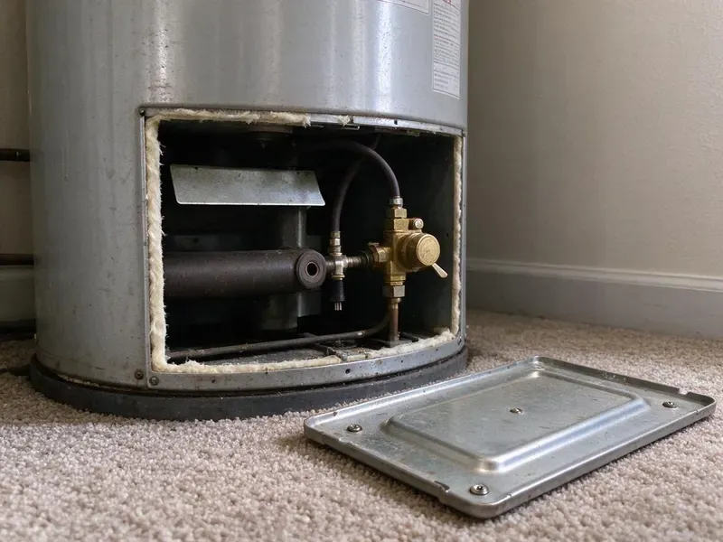

Gas Water Heater Repair in Hickory, NC
Our licensed plumbers in Hickory, NC fix natural gas and propane water heaters, and every visit includes a draft and combustion check.
- Fast Gas Heater Repair
- Licensed Gas Fitters
- Natural Gas & Propane
- Local Techs

Cold Showers in Hickory, NC? We Fix Gas Heaters.
We leak test and check draft before we wrap up.
Gas Water Heater Repair in Hickory, NC By Licensed Plumbers
From a pilot that will not hold to a gas valve that overheats the water, HFN Plumbing handles the full list of gas water heater problems in Hickory, NC. We test before we replace anything. It keeps you from paying for parts you did not need.
Some of what we do:
- Thermostat and Gas Valve Replacement
- Gas control and thermostat replacement
- Burner cleaning and thermocouple swaps

Additional Plumbing Repair Services in Hickory, NC
We offer expert plumbing repair services across Hickory, NC to stop leaks, clear blockages, and keep every fixture working the way it should.


Customers
Why Choose HFN Plumbing for Gas Water Heater Repair in Hickory, NC?
A gas water heater keeps an open flame a few feet from your stored paint and laundry, so who works on it matters. Each of our techs has spent years on gas controls and flues. They diagnose with meters, not guesses. Then the repair gets done once, correctly.
- Draft Verification, We check that exhaust leaves through the flue and does not spill back.
- Stocked Controls, Universal and brand-specific gas valves and pilot kits are stocked on our trucks.
- Gas Leak Testing, Every gas connection we touch is checked with an electronic detector and bubble solution.
Citywide Coverage
Natural gas homes and properties on propane are both part of our service area in and around Hickory, and the trucks carry orifices and parts for each fuel. No part of town is left out. Outlying addresses are covered as well.
Experienced Team
Each tech at HFN Plumbing keeps current on new gas controls and vent rules through ongoing training. They arrive ready to test, not guess. Electronic valves with flash codes get tested as carefully as old standing-pilot tanks, so the diagnosis is right the first time in your Hickory home.
Safety-First Approach
Meeting code is part of the work, not an add-on. Each repair follows the local plumbing code in North Carolina along with the national fuel gas standards that cover venting and clearances to anything that can burn. Inspections tend to go smoothly.
Trusted Certified Hickory Plumbing Services Professionals
At HFN Plumbing, we take pride in licensed, certified plumbing services throughout Hickory, NC. Credentials matter in this trade. Our plumbers hold recognized industry credentials, and they follow strict safety and quality rules on every repair, installation and maintenance call we run.
Call Us Now PHCC Plumbing Contractor Recognition
PHCC Plumbing Contractor Recognition Better Business Bureau (BBB) Accreditation
Better Business Bureau (BBB) Accreditation Angi Certified Pro
Angi Certified Pro ISO 9001 Quality Management Certification
ISO 9001 Quality Management CertificationGas Water Heater Repair for Hickory, NC Homes
Gas Control Valve Replacement in Hickory, NC
Honeywell and White-Rodgers valves report faults with a blinking LED, and the flash count matches a chart on the label. We read the code, then test the thermopile and sensors before blaming the valve. Sometimes the valve really is bad. When the control itself is the problem, we replace it with an exact-match valve or a listed universal model, set the temperature and leak test every joint on the gas train before relighting. We leave the old valve with you if you ask.

Pilot Light Repair in Hickory
The thermocouple is the first thing we test when a pilot will not stay lit. With a millivolt meter, it takes about a minute to see if it is putting out enough. If it reads fine, the next suspects are a clogged pilot orifice, a cracked piezo wire or a thermal cutoff that tripped because the combustion chamber overheated from blocked air. Figure on roughly an hour for most pilot repairs.
Repairing Older Gas Water Heaters in Hickory
Older tanks with standing pilots and no vapor sensor are still out there in Hickory, mostly in basements and utility closets. Their parts are simple, and a universal thermocouple fits nearly all of them. We can keep a pre-2003 heater running when the tank is sound, but we also check the draft hood, the flue connector and the gas cock, since those fittings on an old install are often original and corroded. Plenty of older installs never got a sediment trap. One goes in while we are there.
Propane Water Heater Repair in Hickory
Propane and natural gas heaters look the same but burn at different pressures. A propane tank needs its own orifice and a valve set for roughly 11 inches of water column. Natural gas runs closer to 7 inches, so a heater converted badly, or a regulator that drifted, gives you soot, a yellow flame and a pilot that keeps going out for no obvious reason. A manometer reading tells us the supply pressure. Wrong parts get swapped for the right ones.
Pilot Light and Ignition Service in Hickory
No hot water and a dark pilot window usually point to the ignition side of the heater. We pull the pilot assembly and look at the thermocouple tip, the pilot orifice and the piezo igniter wire. A thermocouple that tests weak on the millivolt meter will not hold the gas valve's magnet open, so the pilot drops out a minute after you relight it by the label. Most trucks carry the common pilot kits.
Urgent Gas Water Heater Repair in Hickory, NC
A gas smell, a flooded garage or a relief valve blowing steam are the calls that cannot wait until Monday. HFN Plumbing runs emergency gas water heater repair across Hickory, NC, with a tech who can shut the unit down, find the cause and make it safe the same day. Gas odor comes first. Walk out, leave the door open and phone the gas company from outside. After that, we handle the heater.
Gas Water Heater Code Compliance in Hickory, NC
Fuel gas code covers more of a water heater repair than most people expect. The tech looks for a drip leg, a listed flex connector and an accessible shutoff valve. Garage installs in Hickory, NC need the burner raised 18 inches off the floor unless the heater is listed as vapor resistant, and strapping goes on wherever the local code asks for it. Clearances get measured too.

Tank Leaks and Anode Rods in Hickory
Corrosion starts at the anode rod and works its way into the steel once the rod is spent. A large share of homes across the state rely on private wells, and iron and manganese often leave orange or dark stains on fixtures. We pull the anode, check how much magnesium or aluminum is left and replace it if the core wire is showing. A fresh anode, a drained tank and a relief valve that seats properly can add years to a heater in a Hickory home that has not started leaking from the shell. A wet bottom seam is different. That tank needs replacing.
Gas Water Heater Repair Near Me in Hickory, NC
Being local means HFN Plumbing can usually get to Hickory, NC homes within a few hours of your call. The techs live here and begin their days close to you. A heater that quits at breakfast often gets fixed before lunch, because the truck already has the thermocouples, gas valves and relief valves that solve most no-heat calls. We usually have late-day openings too.
Garage heaters pull in dust and dryer lint that clog the flame arrestor and trip the thermal switch over a few months. The arrestor and the chamber get cleaned while we are there. We also look at what is stored nearby. Fewer pilot outages follow.
HFN Plumbing at a Glance
- Licensed and insured plumbers serving Hickory, NC
- 24/7 emergency service with same-day scheduling
- Upfront, flat-rate pricing before work begins
- 4.8-star rated by 840+ North Carolina customers
Hickory Map
Hickory Information
- Population
- 44,415
- Area codes
- 828/704/980
- Service area
- Hickory and towns within a 40 mile drive
- Nearby
- Mooresville, Huntersville, Gastonia, Kannapolis
A large share of homes across the state rely on private wells, and iron and manganese often leave orange or dark stains on fixtures. A gas tank that gets flushed and checked once a year holds steady hot water longer.
Expert Services
Reach out to HFN Plumbing for honest, reliable plumbing from people who know the trade in Hickory, NC.
Our Specialized Plumbing Services in Hickory, NC
At HFN Plumbing, you get every kind of plumbing service from one company across Hickory, NC. From leak detection to full system installs, our team works fast and charges fair prices on homes and commercial properties alike. Explore our core services below:


Our Gas Water Heater Repair Process in Hickory, NC
Diagnosis comes first, then the price, then the repair.
Request a Quote
Call (980) 364-4317 to book your gas water heater repair. We ask what the heater is doing and book a visit to your Hickory home.
Thorough Inspection
The plumber tests the pilot, the gas valve, the burner and the vent. The cause gets pinned down before any part comes off the truck.
Clear Explanation and Repair
We explain the problem plainly and quote the repair before starting. Once you approve, the tech fixes it with factory or listed parts.
Frequently Asked Questions About Gas Water Heater Repair in Hickory
Most gas water heater repairs in Hickory, NC land between $150 and $800. A thermocouple or pilot assembly sits at the low end, around $150 to $350. A gas control valve replacement usually runs $400 to $800 or more once you add the part, the labor and the leak testing on every joint we disturb. You get the price after diagnosis.
Same-day repair is the goal on most calls. Thermocouples, pilot assemblies and thermostats are stocked, so those jobs rarely need a return trip. When a heater needs a brand-specific gas valve or a power vent blower, the supply house may need a day to get it, and we will leave the heater safe in the meantime. We give you a time for the return visit.
Labor on every repair carries our own warranty, and parts carry the manufacturer's coverage. Most controls and thermocouples carry at least a year from the manufacturer. Your invoice spells out the terms. If the same part fails inside the warranty window, we come back, replace it and do not charge for the labor at your Hickory, NC home.
Every repair is. We stand behind the labor, and parts keep the maker's coverage. The length of coverage for each part is listed on the invoice next to the part number, so you know what applies if the same thing fails again in a year. Questions go to the office.
For part swaps, almost never. Thermocouples, igniters and gas valves are treated as repairs by most building departments in North Carolina. Replacing the heater or altering the gas piping or vent typically does need one. You will know before we start.
Sediment is the most common reason. A few inches of scale on the bottom takes up space and insulates the water from the burner. A cracked dip tube, a thermostat that drifted low or a burner running short on gas pressure can all cut the recovery rate, so the tech checks each one before recommending anything. Sometimes the tank is just too small.
Yes, when the venting fails. Exhaust can spill indoors through a loose flue, a blocked chimney or a draft hood that backdrafts. We check draft on every repair with a smoke test or a combustion analyzer, and we look for heat-scorched paint or melted plastic near the draft hood, which are signs of spillage. Put CO alarms on every floor.
Relighting a pilot by the label is fine. Replacing a gas valve, a thermocouple or a vent connector is work for a licensed plumber. A bad gas joint or a vent that is put back slightly wrong can leak fuel or carbon monoxide into the house, and many manufacturer warranties are void after unlicensed gas work. Codes in Hickory, NC generally require a licensed plumber for gas work.
Hear From Customers Who Hired Our Plumbing Experts

Nathan E.
Our tankless heater kept throwing an error code and shutting off mid shower. The tech flushed the heat exchanger, which was full of scale, and replaced a bad flow sensor. Hot water has been steady for half a year now.
Water Heater Repair · Mooresville, NC
Lisa C.
Water was pouring out from under the washing machine on a holiday weekend. HFN Plumbing talked me through closing the valves over the phone and had a plumber at the house within ninety minutes. It was a burst fill hose.
Emergency Plumbing · Mooresville, NC
Marcus H.
Grease from the fryer line kept clogging the kitchen drain at my diner. HFN Plumbing hydro jetted the line after closing, showed me the buildup on camera, and set us up on a quarterly cleaning so it does not catch us on a Friday again.
Drain Cleaning · Concord, NC
Patricia H.
We had a slab leak that two other companies could not find. HFN Plumbing located it in under an hour with a listening device. They rerouted the line through the attic instead of breaking up the floor, so we kept our kitchen tile.
Slab Leak Repair · Charlotte, NCCarlos V.
Our house still had galvanized pipe, and upstairs the shower was a trickle. The crew repiped everything in PEX over three days and patched every drywall hole before they left. The pressure difference is night and day.
Repiping · Charlotte, NC
Brian W.
I smelled gas behind the dryer and called right away. The plumber found a corroded flex connector, replaced it, and pressure tested the whole line before turning the gas back on. He let me watch the gauge hold steady for fifteen minutes.
Gas Line Repair · Charlotte, NC